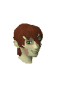
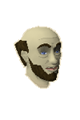
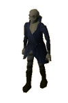

")
Burgh de Rott (Members)
Warning | Introduction | Location | Points of Interest
Personalities | Quests | Creatures of the Night | Miscellaneous
Personalities | Quests | Creatures of the Night | Miscellaneous
Warning
You must have started the In Aid of the Myreque quest to gain access to Burgh de Rott. The town lies deep in the southern reaches of Morytania, past the horrid swamps of Mort Myre and the afflicted village of Mort'ton. You will face a number of ghasts on your way there, so it's best to be prepared. In order to fight the ghasts you will need druid pouches, which you can learn to make during The Nature Spirit quest.
You can also get there using the boat shortcut uncovered during In Search of the Myreque, which will allow you to avoid much of the swamp.
For more information about braving the swamps, see the Terrain Survival Guide.
Introduction

The town is composed of broken walls and unthatched roofs, and the people survive in the remains of the decayed and dilapidated buildings, living off anything that happens to present itself as remotely edible. They are quite a cheerful bunch, all things considered, but very wary of strangers - understandable in a town fearful of the return of the vampires.
Location

North-east of the town are the Barrows, where long-dead warriors rise up against anyone foolish enough (or greedy enough) to try to plunder their tombs.
Far to the north, well beyond the reach of the citizens of Burgh de Rott, is the werewolf town of Canifis.
Points of Interest

There are a good number of Fishing spots to the south of town, though, so if you come prepared you will be able to feed yourself once you get there.
To the west of town is an abandoned mine. Within those depths are a number of veins of ore, though the mine has a number of unresting defenders that may not like an explorer wandering about in their domain.
Personalities

It is Florin's duty to watch the gates of the town, and to stop anyone the townsfolk do not trust from entering. Once he has decided to accept you into the town, though, you will find that he is a reliable fellow who takes his job with the seriousness it requires.
|

Elisabeta is Burgh de Rott's village leader, a position she has been given because of her level head and her compassion for all the town's citizens. She is still quite young, but has shown a level of maturity that can only have come from surviving in such a decaying village and living in fear of the vampyres.
|
|
| Florin can found be inside the main gates. | Elisabeta can be found east of the gates. |

Aurel would be the owner and proprietor of the town's general store if his store were in better repair and he actually had anything to sell. As it stands, he simply stares at his empty shelves and crates and sighs a lot.
|

Cornelius is one of the oldest residents of Burgh de Rott, and he still remembers the stories told by his grandfather about the days before the vampyres came, when his town did not live in fear as they do now. He'd like a real job to keep his mind active, but there is little employment in Burgh de Rott.
|
|
| Aurel can be found in the general store. | Cornelius can be found around the bank in the south of town. |
|

Gadderanks is probably the most hated human in Morytania. To keep his family safe he has taken on the job of tithe collector, and his presence is feared more than almost anyone else in Burgh de Rott. He carries with him the mighty Gadderhammer, which he uses to ensure no one interferes with his business. He is usually accompanied by a pair of vampyre juvinates. |
Quests
The following quest can be started in Burgh de Rott:
- Darkness of Hallowvale (Members)
Creatures of the Night

Even the youngest of vampyres can cause trouble for adventurers, and these reprehensible creatures prove that. They are young by vampyric standards, but have an unnatural strength and a foul lust for blood.
|

Vampyre juvenates are far more dangerous than you might think. Though they can only inflict slightly more damage than juveniles, they have been admitted into a secret vampyric order that makes them immune to most weapons. If you expect to fight any of these you had best be carrying a wolfsbane dagger, Silverlight, Darklight, some sort of silver sickle, or a similar weapon capable of defeating vampyres.
|
|
| Vampyre juveniles can be found east of town. | Vampyre juvenates can be found east of town. |

Vampires are the ruling race of Morytania, and the vampires found near Burgh de Rott are particularly nasty. Their wide grins are the colour of blood and feature the fangs that they use to drain blood. They are not particularly weak against any type of attack, but ranged or magic attacks at least keep them at a distance.
|
| Vampires can be found west of the town, near the entrance to the abandoned mine. |
Miscellaneous
- There is a well in Burgh de Rott, and a rather convenient bucket just west of there.
- Upstairs in the house east of the gates is a hammer, which comes in handy if you need to repair anything.
- If you see any travellers in Burgh de Rott, they will reward you for escorting them to Paterdomus, the temple over the River Salve.
- The abandoned mine has an excellent range of ores available and, once you've repaired them, the bank and furnace are a convenient jog away.

More articles in
Cities and Towns
|
|